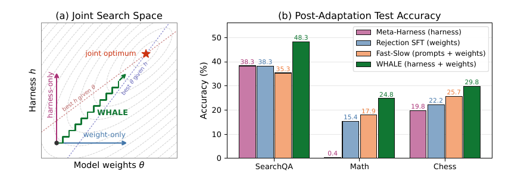
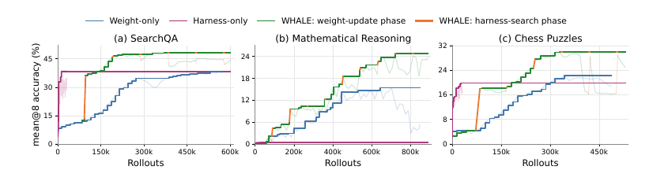

WHALE: A Simple Recipe for Joint Harness–Weight Optimization
TL;DR
- "WHALE: A Simple Recipe for Joint Harness–Weight Optimization" (arXiv 2609.00196; Haechan Kim, Yoonho Lee, Gisang Lee, Chelsea Finn, Kangwook Lee — KRAFTON / KAIST / Stanford; code released) alternates two black-box phases: update model weights under the current harness (online rejection-sampling fine-tuning), then search over executable harness code under the updated model (Meta-Harness) — the first controlled, budget-matched study of full alternating weight–harness optimization.
- On Qwen3.5-2B/4B agents across SearchQA, math-with-code, and chess puzzles, WHALE beats weight-only and harness-only by 7.67–24.38 points and Fast–Slow Training (same schedule, search restricted to prompts) by 4.15–13.00 points in best mean@8 accuracy — e.g. SearchQA 48.3% vs 38.3/38.3/35.3.
- The scheduling findings are the real contribution: domains split into harness-dominant and weight-dominant regimes, one big pass per component ("stagewise") loses to small interleaved updates by 5.32–9.16 points at higher rollout cost, and a per-phase patience rule on training signals (adaptive WHALE) matches or beats hand-tuned schedules — 52.82% on SearchQA, the best number in the whole comparison.
Why this matters
Kangwook Lee's one-line framing of the paper — with data, you should train both the model weights and the harness — is precisely the co-evolution thesis this tracker has been assembling piece by piece. Training Agents Inside Their Harnesses does the weight half with the scaffold frozen; Meta-Harness and Harness-R1 do the harness half with the weights frozen; the long-horizon agents survey formalizes \(\text{Agent}=\pi_\theta\oplus H\) and calls the joint problem open. WHALE is the first paper here to run the full loop both ways under matched budgets and ask the operational questions: which component is the bottleneck, and how long should each phase run before switching?
The answers are actionable. First, a short harness search is a cheap diagnostic: in SearchQA it matched peak weight-only accuracy with 5.79% of the rollouts, so run it before you commit to RL. Second, the interaction is catalytic in both directions — in Math, harness search is nearly useless on the base model (0.42% vs 15.42% for weight-only), but after one small weight update the same search becomes effective (format accuracy +3.54 points in 4,608 rollouts, where harness-only spent 46,080 rollouts for +0.63). Optimizing one component changes which gains the other can reach. Third, the standard practice — train the model to convergence, then tune the scaffold once — is quantifiably the wrong schedule.
The core idea
Weights \(\theta\) and an executable harness program \(h\) (system instructions, tool schemas, context management, parsing/execution logic, termination policy) jointly induce a trajectory distribution, and the object to maximize is the expected task reward of the system:
where \(x\) is a task from distribution \(\mathcal{P}\), \(\tau\) a full trajectory (messages, tool calls/results, environment transitions), and \(R\in\{0,1\}\) a sparse trajectory-level verifier. Since \(J\) is not separable in \(\theta\) and \(h\), WHALE decomposes it into alternating conditional updates, each against a fixed counterpart:
Alternation avoids evaluating each update against a moving target (the two phases run on incompatible cadences: gradient steps vs. long propose-evaluate-select cycles). The recipe is modular — both operators are black boxes — and the whole design question collapses into when to switch: each phase needs enough evidence to separate real improvement from noise, but must stop before over-optimizing against a counterpart that is about to change.

Figure 1 from the paper: (a) weight-only and harness-only adaptation move along one axis of \(J(\theta,h)\); alternating steps track the valley to the joint optimum. (b) WHALE beats single-component and prompt-restricted joint baselines in all three domains.How it works
Weight phase — online RSFT. Under fixed harness \(h\), sample \(G=8\) trajectories per prompt from the frozen \(\theta_{\mathrm{old}}\), keep only verifier-accepted ones (\(\mathcal{S}_s^+\)), and maximize token-normalized log-likelihood on the model-generated tokens \(\mathcal{I}(\tau)\) only:
Harness phase — Meta-Harness. Under fixed \(\theta\), an LLM proposer inspects an archive of prior harnesses plus their evaluation artifacts (scores, per-example outcomes, trajectory logs) through filesystem tools, writes \(M\) candidate harness programs per iteration, and each candidate is scored on a small \(\mathcal{D}_{\mathrm{harness}}\) (256 examples, 1 rollout each):
The search may modify prompts, tool I/O formatting, tool feedback, stopping criteria, and turn allocation — model, data, verifier, and environment stay fixed. The best archived harness is accepted.
Algorithm: WHALE (RSFT + Meta-Harness instantiation)
Input: (theta_0, h_0), D_weight, D_harness, verifier R
Budgets: E epochs/cycle, I search iters/cycle, M candidates/iter
for k = 0, 1, ...:
# ---- weight-update phase (harness h_k frozen) ----
for each prompt batch B_s in next E-epoch span of D_weight:
sample G rollouts per prompt under (theta_old, h_k)
S+ <- verifier-accepted (x, tau) pairs
SGD-ascend J_weight on model tokens of S+; sync rollout workers
theta_{k+1} <- theta
# ---- harness-search phase (theta_{k+1} frozen) ----
archive A <- {h_k} with eval artifacts
for j = 1..I:
C_j <- Propose(A, artifacts; M) # LLM writes harness code
evaluate each h in C_j on D_harness (1 rollout/example)
A <- A ∪ C_j; h_accept <- argmax_{h in A} J_harness
h_{k+1} <- h_accept
# adaptive WHALE: replace fixed E, I with per-phase patience —
# stop a phase when its own training signal plateaus
return best (theta_k, h_k) on test
Adaptive WHALE replaces \((E,I)\) with an early-stopping-style patience rule per phase, driven purely by training signals (sliding-window training reward for weights; best archive training score for harness search) — no validation set.
Results
Setup: Qwen3.5-2B (SearchQA: Search-R1-style Wikipedia retrieval; Math: DAPO-Math-17K training, AIME 24/25 test, Python execution tool) and Qwen3.5-4B (Lichess chess puzzles, UCI moves against a fixed opponent line). Baselines share initializations and receive matched cumulative budgets.
- Headline (best test mean@8): SearchQA 48.3 vs 38.3 (harness-only) / 38.3 (weight-only) / 35.3 (FST); Math 24.8 vs 0.4 / 15.4 / 17.9; Chess 29.8 vs 19.8 / 22.2 / 25.7. Since FST uses WHALE's exact schedule with search confined to prompts, the FST gap (+4.15 to +13.00) isolates the value of searching executable harness code over prompt text.
- Bottleneck regimes: SearchQA is harness-dominant — harness search lifts retrieval accuracy 26.88%→60.61% (the harness post-processes queries and controls what returns), and WHALE reaches 65.41%. Math is weight-dominant — the binding constraint is response truncation (95.83%→30.83% only via weight updates); harness-side caps and recovery steps can't fix base-model verbosity.
- Alternating vs stagewise: full-budget weight-then-harness reaches 43.02% (SearchQA) and 15.63% (Math); WHALE (0.6, 6) beats it by +5.32/+9.16 and passes its final accuracy with 29%/49% of the rollouts. Diagnosis: conditional over-optimization — in Math, the 60-iteration stagewise harness search keeps improving its training score while gaining +0.21 test points.
- Schedule geometry: (0.2, 6) is the best fixed schedule in both regimes (50.09% / 28.33%); scaling per-cycle budgets up monotonically hurts (SearchQA 50.09→48.34→45.93 along (0.2,6)→(0.6,6)→(1.0,10)), and too little evidence per phase destabilizes (the Math (0.2, 2) run accepted a chance-inflated candidate and was stopped). The budgets interact: increasing \(E\) helps at \(I{=}2\) but hurts at \(I{=}6\).
- Adaptive: 52.82% on SearchQA — best point of the entire comparison, +2.73 over the best hand-tuned schedule with 23% fewer rollouts than (0.6,6) needed; on Math 26.46%, above (0.6,6) but 1.87 below the best fixed schedule. Realized median phase lengths (~0.25 epochs, \(I{=}7\)) land near the sweep's optimum on their own.

Figure 2 from the paper: best-so-far test mean@8 vs. cumulative rollouts. The orange segments (harness-search phases) produce the near-vertical jumps; note harness-only saturating in Math while WHALE keeps climbing.How it connects
- Completes the co-evolution quadrant. Training Agents Inside Their Harnesses = weights-only inside a fixed scaffold; Meta-Harness = harness-only around frozen weights (and is WHALE's search operator); Harness-R1 trains an editor while the target stays frozen. WHALE alternates the two native updates directly — the recipe the Interleaving Harness Engineering with RL piece sketched, now with a controlled study behind it.
- The over-optimization result generalizes a familiar failure. Stagewise's collapse (training score up, +0.21 test) is the same train-signal-overfitting that Rethinking Harness Evolution and AutoSaddler document for harness search alone — WHALE shows the fix is not better gating but shorter phases against a fresher counterpart.
- Regime diagnosis is a scaling-allocation question. "Which component is the bottleneck" is the harness-side analogue of the pretrain-vs-RL compute split in the RL/pretrain scaling-law study; the 5.79%-of-rollouts diagnostic makes it cheap to answer empirically before committing GPU-hours.
- Contrast with per-task harness generation. JIT Agent Harnesses writes a fresh harness per task with weights frozen; WHALE amortizes one harness per domain but co-adapts the weights. The obvious hybrid — RSFT under JIT-style task-conditional harnesses — is unexplored, and HarnessCompass-style generalization pressure would be the natural guard for \(\mathcal{D}_{\mathrm{harness}}\) overfitting.
Critical take
The recipe is genuinely simple, but the evidence base is small-model and single-seed territory: Qwen3.5-2B/4B, 256-example harness-search sets, and no reported variance across runs (inferred from the main text — verify in the appendix). RSFT is the gentlest possible weight operator; whether the scheduling conclusions survive PPO/GRPO-class updates — which move the policy much further per epoch and could make "small phases" either more critical or unstable — is untested, and the authors themselves flag operator generality as future work. The harness-search budget accounting also excludes proposer compute (a frontier-model expense that Meta-Harness inherits), so the rollout-efficiency claims for harness phases understate dollar cost.
There's also a quiet dependency: adaptive WHALE's patience rule assumes the phase training signal is informative. In Math the training score of a long harness search kept improving while test gains were nil — the very failure the rule is supposed to stop — and adaptive Math indeed lands below the best fixed schedule. Regime detection from training signals alone may be the actual open problem. None of this dents the core message: the bottleneck moves, and any pipeline that freezes one side of \((\theta, h)\) by convention is leaving points — sometimes 20+ — on the table.
If you remember three things
- The bottleneck is domain-dependent and it moves: SearchQA is harness-dominant, Math is weight-dominant, and a small update to one component can unlock a previously useless search over the other — so optimize \(J(\theta,h)\), not one axis.
- Alternate in small steps: one big weight pass followed by one big harness pass over-optimizes each side against a stale counterpart; short interleaved phases won by 5–9 points at half the rollouts.
- A cheap harness search is your first diagnostic: it matched peak weight-only accuracy with ~6% of the rollouts in the harness-dominant regime — run it before you launch RL.